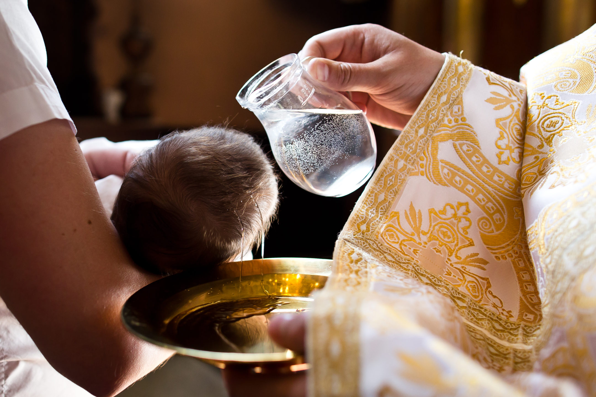
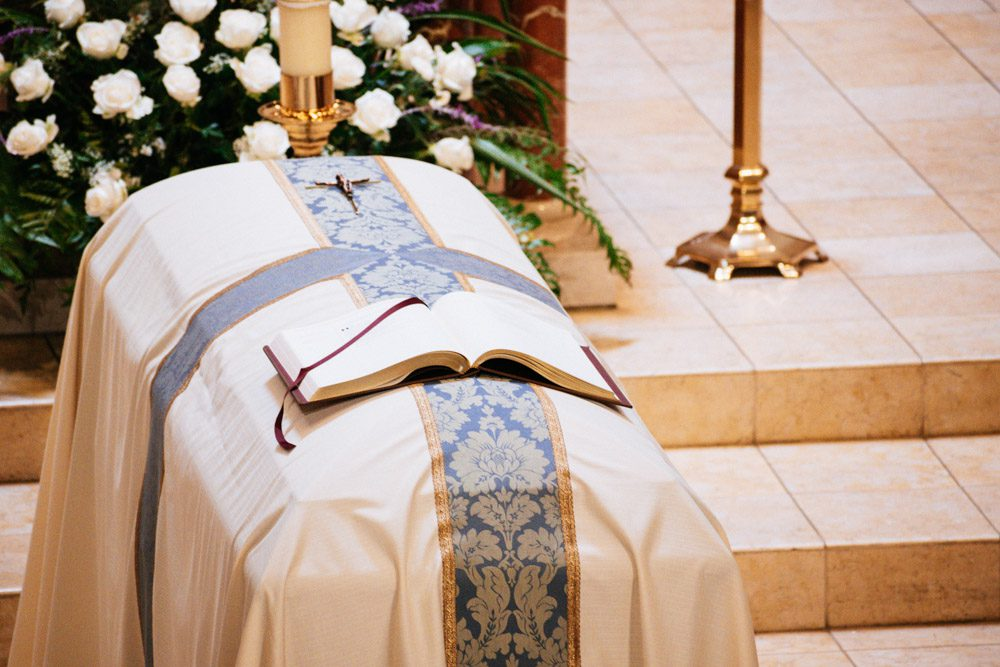

Infant Baptism
Baptism is the first sacrament of initiation. Parents seeking baptism for their children must attend a preparation session to understand the responsibilities of raising a child in the Catholic faith.
- Copy of Child's Birth Certificate
- Parents' Church Marriage Certificate
- Godparent's Confirmation Certificate
Upcoming English Baptism Schedule
- Baptism Day: Sunday, 24th May 2026 at 3:00 PM
- Parent/Sponsor Briefing: Sunday, 17th May 2026 at 3:00 PM
- Registration Closes: 14th May 2026
- Location: Sacred Heart Church, Kota Sentosa
Holy Matrimony
Couples planning to get married must register at the parish office at least six months prior to their intended wedding date and attend the Catholic Marriage Preparation Course (CMPC).
- Pre-Nuptial Inquiry Form
- Baptism Extract (issued within 6 months)
- CMPC Completion Certificate

RCIA & Faith Formation
Whether you are an adult seeking to enter the Catholic Church through the Rite of Christian Initiation of Adults (RCIA) or registering your child for Sunday School, our faith formation programs guide you closer to Christ.
- RCIA: Open to non-Catholics and adult confirmands
- Sunday School: Ages 7 to 16
- Registration opens annually in December

Funeral Arrangements
In times of loss, our parish community is here to support you. Please contact the parish office immediately to arrange for funeral masses, blessings, and cemetery protocols before confirming details with funeral directors.
- Death Certificate
- Deceased's Baptism/Confirmation details
- Booking of Parish Parlour (if required)